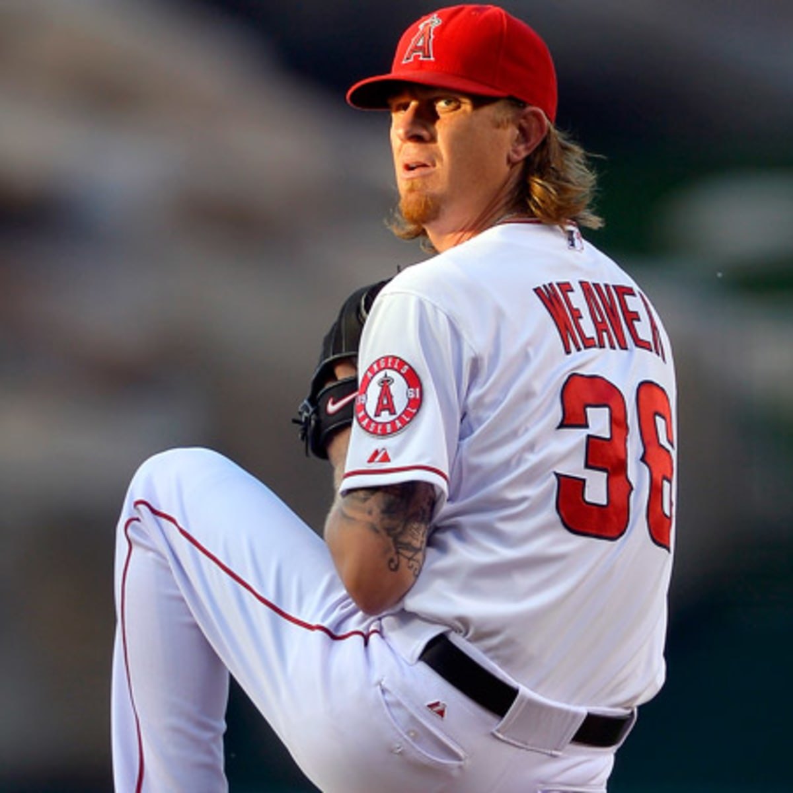

Shohei Ohtani

The two-way player from Japan was an instant standout as he won Rookie of the Year in his first year with the Angels in 2018. In the following years he was a two-time American League MVP as he dominated opponents both on the mound and at the plate. He fooled hitters consistently with his slider and then punished opposing pitchers with his unique hitting strength.
Jered Weaver
Weaver was one of the most beloved players that has suited up for the Halos in organization history. Not known for the speed of his fastball. Weaver still dominated with his off-speed pitches. The difference in speed between his fastball and off-speed pitches is what generally contributed to the downfall of batters he faced. Halo fans have great respect for their long-term ace.
Kole Calhoun

Being nicknamed the Red Baron for his red hair and outstanding defensive plays, Calhoun was an electric player for the Angels between 2012-19. He was always on watch every game to make a diving catch or to rob hitters of homeruns and extra base hits. He had plenty of highlights from the plate hitting bombs to right field as he was a lefty. Calhoun will always be appreciated by Halo fans.